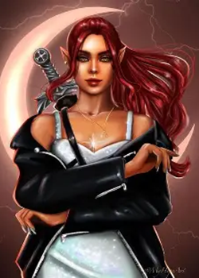
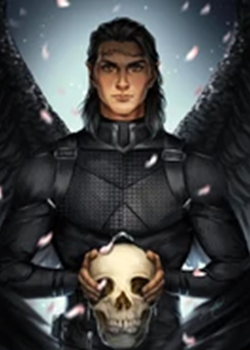
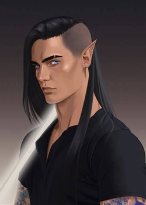

Crescent City follows Bryce Quinlan as she navigates a modern, magical city shaped by power, danger, and hidden truths. What begins as a story of loss and grief quickly unfolds into a deeper mystery involving ancient forces, political control, and rebellion. At its core, the series is about chosen family, resilience, and finding light in a world that constantly demands sacrifice.
Bryce’s story is rooted in grief, love, and quiet resilience. Beneath her sharp wit and seemingly carefree exterior lies someone deeply marked by loss, who learns to carry both pain and strength at the same time. Her journey is about refusing to be broken by the world around her, even when it takes everything from her.

Hunt is a warrior defined by captivity, guilt, and the longing for freedom. Bound by a past he cannot escape, he struggles between obedience and rebellion, carrying the weight of everything he has been forced to do. His connection with Bryce becomes both a source of hope and a reminder that he is still capable of choosing who he wants to be.

Bryce’s brother, torn between duty, identity, and loyalty. He lives in the space between expectations and who he truly wants to be, navigating power, politics, and his own sense of belonging.

Though her presence is shaped by absence, Danika’s impact drives much of the story. Her secrets, strength, and loyalty continue to influence everything Bryce becomes, even after she is gone.